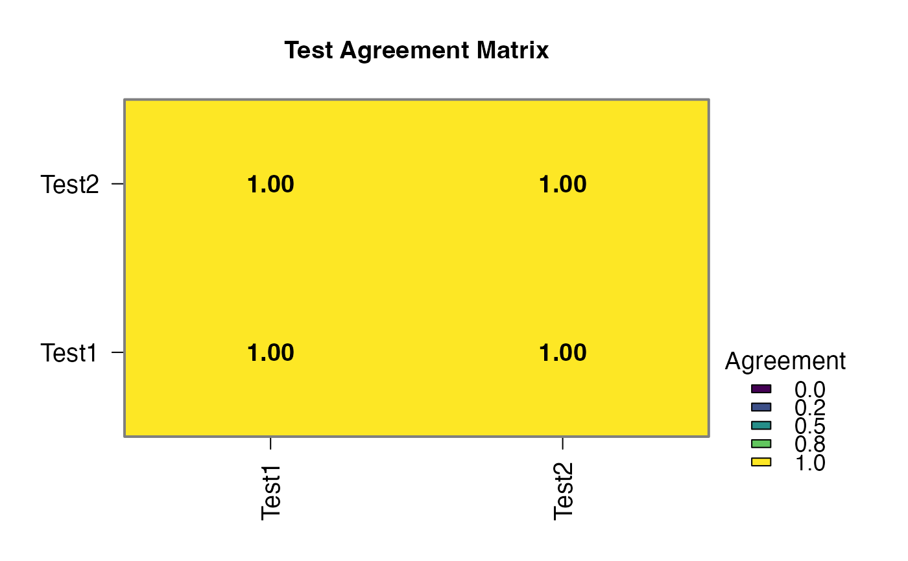
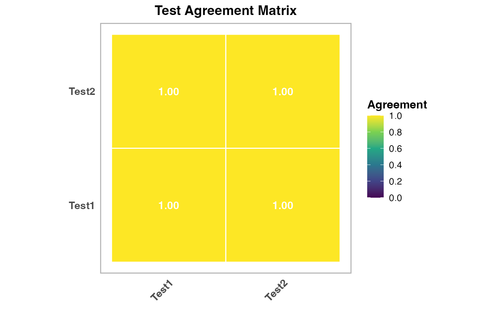

nogoldstandard High Agreement Data
Source:R/data_nogoldstandard_docs.R
nogoldstandard_highagreement.RdDataset with 150 patients where two tests show high agreement (95% concordance). Tests have good sensitivity (0.90, 0.88) and specificity (0.90, 0.88).
Format
A data frame with 150 rows and 3 variables:
- patient_id
Character: Patient identifier (PT001-PT150)
- Test1
Factor: First test ("Negative", "Positive"), Sens=0.90, Spec=0.90
- Test2
Factor: Second test ("Negative", "Positive"), Sens=0.88, Spec=0.88, 95% agreement
- age
Numeric: Patient age in years (mean 60, SD 10)
Details
Simulated with 35% prevalence. High correlation between tests (95% conditional agreement) tests latent class model assumptions about conditional independence.
Examples
data(nogoldstandard_highagreement)
nogoldstandard(data = nogoldstandard_highagreement,
test1 = "Test1", test1Positive = "Positive",
test2 = "Test2", test2Positive = "Positive",
test3Positive = "", test4Positive = "",
test5Positive = "", method = "composite")
#>
#> ANALYSIS WITHOUT GOLD STANDARD
#> Analysing 150 cases
#> All 150 cases have a result for every selected test.
#>
#> WARNING: Composite Ties
#> Composite reference with even number of tests may result in ties. Consider using an odd number of tests or a different method.
#>
#> WARNING: Composite reference cannot be used with only two tests
#> With two tests a majority vote has no majority: one positive out of two is a tie, which this rule counts as diseased, making the composite reference identical to "any test positive". Every test then agrees perfectly with the reference whenever it is positive, so specificity and PPV are fixed at 100% by construction and are left blank below. Add a third test, or interpret only the sensitivity column -- and note that it too is inflated because each test helped build the standard it is being judged against.
#>
#> WARNING: This method cannot estimate accuracy
#> The reference standard is defined as "at least one test is positive", so each test is being compared against a rule built from its own result. Specificity and PPV are therefore fixed at 100% by construction on every dataset, whatever the tests actually do, and are left blank below rather than reported as findings. The remaining figures are inflated by the same circularity and describe agreement with the composite rule, not diagnostic accuracy. To estimate accuracy without a gold standard, use the latent class method with three or more conditionally independent tests.
#> Agreement Statistics (Cohen's Kappa)
#> ─────────────────────────────────────────────────────────
#> Test Pair Kappa p-value Agreement
#> ─────────────────────────────────────────────────────────
#> Test1 vs Test2 1.000000 < .0000001 100.00000
#> ─────────────────────────────────────────────────────────
#> Note. Kappa standard errors and p-values use a
#> large-sample normal approximation rather than the
#> exact asymptotic SE (e.g. vcd::Kappa); interpret
#> p-values cautiously, especially in small samples.
#>
#>
#> <div class='clinical-summary' style='background: #f0f8ff; padding:
#> 15px; border-radius: 8px; margin: 10px 0;'><h4 style='color: #1565c0;
#> margin-top: 0;'> Clinical Summary
#>
#> Analysis: No gold standard analysis using composite method
#>
#> Tests analyzed: Test1, Test2 (N=2)
#>
#> Cases meeting the reference rule 37.3% *(this is the share of cases
#> satisfying the rule, not an estimate of disease prevalence)*
#>
#> Test sensitivities: Range from 100.0% to 100.0%
#>
#> Caution: this method scores each test against a reference built from
#> the tests themselves, so the figures describe agreement with that rule
#> rather than diagnostic accuracy.
#>
#> <div style='background: #f8f9fa; padding: 20px; border-radius: 8px;
#> margin: 15px 0; border-left: 4px solid #007bff;'><h3 style='color:
#> #007bff; margin-top: 0;'> Method Selection Guide
#>
#> <div style='margin: 15px 0; padding: 15px; background: #e8f5e8;
#> border-radius: 5px;'><h4 style='color: #2e7d32; margin-top: 0;'>
#> Latent Class Analysis (Recommended)
#>
#> Description: Most robust method using mixture models. Estimates
#> disease prevalence and test parameters simultaneously.
#>
#> Best for: Diagnostic validation studies with 3+ tests and N>=100
#>
#> Strengths: The only method here that estimates accuracy rather than
#> agreement with a self-built reference; provides model fit statistics.
#> Assumes the tests are conditionally independent given true status --
#> it does NOT model conditional dependence
#>
#> <div style='margin: 15px 0; padding: 15px; background: #e3f2fd;
#> border-radius: 5px;'><h4 style='color: #1565c0; margin-top: 0;'>
#> Bayesian Analysis
#>
#> Description: Incorporates prior knowledge about test performance using
#> Bayesian methods.
#>
#> Best for: Studies where you have prior information about expected
#> sensitivity/specificity
#>
#> Strengths: Uses prior knowledge, handles uncertainty well, good for
#> smaller samples
#>
#> <div style='margin: 15px 0; padding: 15px; background: #fff3e0;
#> border-radius: 5px;'><h4 style='color: #ef6c00; margin-top: 0;'>
#> Composite Reference
#>
#> Description: Uses majority vote of available tests as pseudo-gold
#> standard.
#>
#> Best for: Inter-rater agreement studies with 3+ tests, exploratory
#> analysis
#>
#> Strengths: Simple and intuitive. Not an accuracy estimate: each test
#> helps build the standard it is judged against, which inflates its
#> apparent performance. Needs 3+ tests -- with 2 a tie counts as
#> diseased, making it identical to Any Test Positive
#>
#> <div style='margin: 15px 0; padding: 15px; background: #fce4ec;
#> border-radius: 5px;'><h4 style='color: #c2185b; margin-top: 0;'> All
#> Tests Positive
#>
#> Description: Conservative approach - disease present only if ALL tests
#> are positive.
#>
#> Best for: Highly specific diagnoses where false positives are very
#> costly
#>
#> Strengths: A deliberately strict reference. Sensitivity and NPV cannot
#> be estimated under this rule -- they are fixed at 100% by construction
#> -- so only specificity and PPV are shown, and both are inflated by the
#> same circularity
#>
#> <div style='margin: 15px 0; padding: 15px; background: #e8f5e8;
#> border-radius: 5px;'><h4 style='color: #388e3c; margin-top: 0;'> Any
#> Test Positive
#>
#> Description: Liberal approach - disease present if ANY test is
#> positive.
#>
#> Best for: Population screening scenarios where missing cases is costly
#>
#> Strengths: A deliberately permissive reference. Specificity and PPV
#> cannot be estimated under this rule -- they are fixed at 100% by
#> construction -- so only sensitivity and NPV are shown, and both are
#> inflated by the same circularity
#>
#> <div style='margin: 15px 0; padding: 10px; background: #fff8e1;
#> border-radius: 5px; border-left: 3px solid #ffb300;'><h4 style='color:
#> #e65100; margin-top: 0;'> Selection Tips
#>
#> Start with Latent Class Analysis for most diagnostic studiesUse
#> Composite Reference for quick exploratory analysisChoose All/Any Tests
#> Positive based on clinical consequences of errorsConsider Bayesian if
#> you have strong prior information
#>
#> Disease Prevalence
#> ───────────────────────────────────────
#> Estimate Lower CI Upper CI
#> ───────────────────────────────────────
#> 37.33333 29.59283 45.07384
#> ───────────────────────────────────────
#>
#>
#> Test Performance Metrics
#> ─────────────────────────────────────────────────────────────────────────────────────────────────────────────────────
#> Test Sensitivity Lower CI Upper CI Specificity Lower CI Upper CI PPV NPV
#> ─────────────────────────────────────────────────────────────────────────────────────────────────────────────────────
#> Test1 100.00000 100.00000 100.00000 100.00000
#> Test2 100.00000 100.00000 100.00000 100.00000
#> ─────────────────────────────────────────────────────────────────────────────────────────────────────────────────────
#> Note. 95% intervals are normal-approximation (Wald) intervals, using the estimated number of diseased cases as
#> the denominator for sensitivity and non-diseased for specificity. They treat the estimates as observed
#> proportions and so understate the uncertainty of a latent-variable model; enable Bootstrap for intervals that
#> account for the estimation itself.
#> Note. Each test is scored against a reference standard built from the tests themselves, so these are measures
#> of agreement with that rule, not estimates of diagnostic accuracy. The blank column is fixed at 100% by
#> construction and carries no information.
#>
#>
#> Test Cross-Tabulation
#> ───────────────────────────────────────────
#> Test Combination Count Percentage
#> ───────────────────────────────────────────
#> Test1-, Test2- 94 62.66667
#> Test1+, Test2+ 56 37.33333
#> Test1+, Test2- 0 0.00000
#> Test1-, Test2+ 0 0.00000
#> ───────────────────────────────────────────
#>

